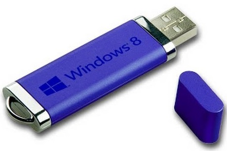

Tutorial Install windows 8
PERKENALAN WINDOWS 8
Windows 8 adalah keluaran dari microsoft yang secara resmi di rilis pada tahun 2012 bersamaan dengan peluncuran komputer perdana yang menggunakan windows 8. Versi percobaan windows 8 berupa Consumer preview dan release preview. pada 26 juni 2013 microsoft merilis versi uji coba windows 8.1
SumberWikipedia
Cara Menginstall
Catatan: Harap Backup dahulu isi USB flashdisk kita, karena kita akan memformatnya kemudian.
Langkah-Langkah menginstall Windows 8 Melalui USB Flashdisk:
- Colokkan USB flashdisk kita ke komputer dan backup (simpan) dahulu file2 didalamnya jika ada ditempat lain.
- Klik Start -> All Programs -> Accessories klik kanan pada Command Prompt dan pilih Run as administrator untuk menjalankan Command Prompt dengan hak akses Administrator. Klik Yes kalo nongol jendela UAC (User Account Control.
- Pada Command Prompt, ketikkan perintah DISKPART dan tekan Enter
- Sekarang, ketik perintah LIST DISK dan tekan Enter, untuk melihat nomor disk USB flashdisk kita yang mana, dalam tutorrial berikut USB flashdisk saya ada dinomor 1. Periksa ukuran USB flashdisk berikutnya (lih gambar) untuk memastikan nomor USB flashdisk yang akan kita pakai.
- Sekarang ketikkan perintah berikut satu persatu diikuti dengan menekan tombol Enter
- Select DISK 1
- Clean
- Create Partition Primary
- Active
- Format Fs=NTFS
- Assign
- Exit
- Colokkan USB flashdisk kita ke komputer dan backup (simpan) dahulu file2 didalamnya jika ada ditempat lain.
- Klik Start -> All Programs -> Accessories klik kanan pada Command Prompt dan pilih Run as administrator untuk menjalankan Command Prompt dengan hak akses Administrator. Klik Yes kalo nongol jendela UAC (User Account Control.
- Pada Command Prompt, ketikkan perintah DISKPART dan tekan Enter
- Sekarang, ketik perintah LIST DISK dan tekan Enter, untuk melihat nomor disk USB flashdisk kita yang mana, dalam tutorrial berikut USB flashdisk saya ada dinomor 1. Periksa ukuran USB flashdisk berikutnya (lih gambar) untuk memastikan nomor USB flashdisk yang akan kita pakai.
- Sekarang ketikkan perintah berikut satu persatu diikuti dengan menekan tombol Enter
- Select DISK 1
- Clean
- Create Partition Primary
- Active
- Format Fs=NTFS
- Assign
- Exit
Responsive Slides
Powered bybespoke-scale
Bullet List
Powered bybespoke-bullets
- Bullet 1
- Bullet 2
- Bullet 3
Syntax Highlighting
Powered byLea Verou"sPrism
Named Route
Powered bybespoke-hash
Look up! This route has been named with a"data-bespoke-hash"attribute.
Emphatic Slide!
Powered bybespoke-backdrop
Just the beginning...
- EditJademarkup in"src/index.jade"
- EditStylusstyles in"src/styles/main.styl"
- Edit JavaScript in"src/scripts/main.js"
- Enjoy! :) -@markdalgleish